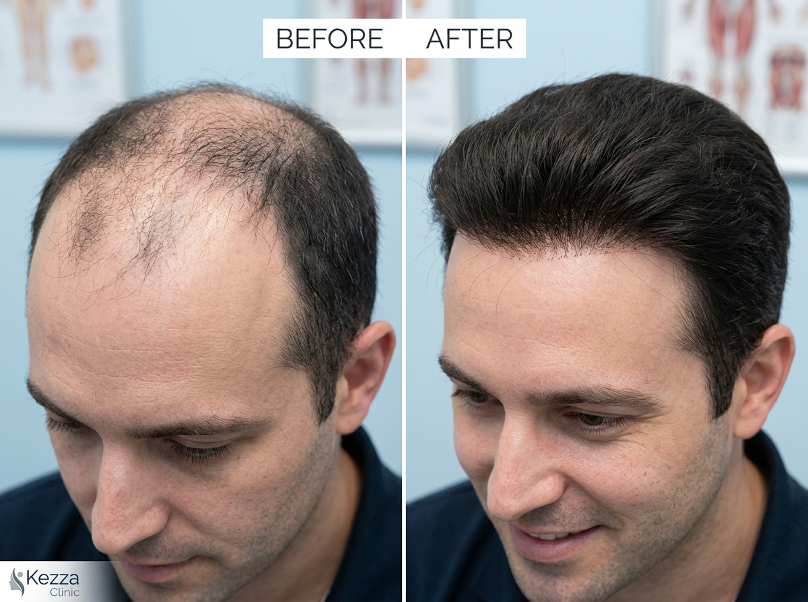
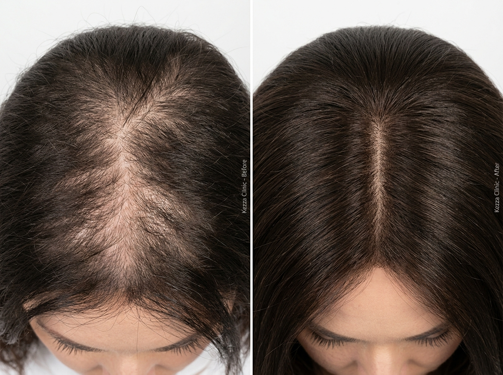

Custom Hair Wig & Hair Systems in Jaipur | Non-Surgical Natural Restoration
Doctor-led non-surgical hair replacement delivering instant, natural density without surgery. Custom-tailored micro-lace and poly bio-skin bases crafted with ethically sourced natural human hair.
- Pure natural virgin human hair
- Breathable micro-lace & bio-skin bases
- Seamless invisible front hairline
- Zero surgical downtime or incisions
- Active lifestyle ready (gym & swim)
- Precision styling by senior artists

5-Step Custom Transformation Process
Explore how your custom hair system is mapped, tailored, attached, and styled for undetectable natural results.
Stage 1 Scalp Mapping & Density Analysis
Our senior hair restoration specialist evaluates your thinning pattern, scalp contours, and hair loss progression using dermatological trichoscopy. We create a 3D anatomical contour map of your thinning area to ensure the system hugs your skull with millimeter precision.
- Digital trichoscopy evaluation
- Exact perimeter measurement
- Scalp sensitivity assessment
- Natural hairline angle tracing
Stage 2 Base Selection & Hair Color Matching
We select the ideal base membrane based on your lifestyle, perspiration habits, and aesthetic goals. Then, natural virgin human hair is hand-matched to your existing strands across 6 criteria: shade, undertone, grey percentage, thickness, wave pattern, and density gradation.
- Swiss Lace vs Bio-Skin selection
- Multi-shade color matching
- Wave & curl texture integration
- Calibrated density percentage
Stage 3 Custom Grafting & Base Trimming
The system base is trimmed along your personalized template boundary. The micro-membrane is tailored so the edges transition seamlessly into your natural biological hair, creating a zero-ridge border that cannot be felt by touch.
- Laser-guided border precision
- Zero-ridge transition perimeter
- Micro-ventilated breathable pores
- Directional follicle angling
Stage 4 Medical-Grade Attachment & Bonding
Depending on your chosen wear schedule, the system is securely attached using FDA-cleared hypoallergenic medical bio-adhesives, water-resistant tapes, or secure micro-clips. The bond is sweat-proof, shower-proof, and withstands sports, running, and swimming.
- Hypoallergenic medical bonding
- High-tack waterproof dermal tape
- Secure, comfortable micro-clips
- Scalp protector antiseptic seal
Stage 5 Master Stylist Cut, Blend & Graduation
Our experienced salon stylists cut, layer, and texturize the system together with your own hair. We feather the hairline and sides for a completely undetectable transition, styling your hair to your preferred look—pompadour, side-part, crop, or natural waves.
- Precision razor blending
- Seamless length graduation
- Personalized lifestyle styling
- Complete home care orientation
Custom Hair Systems & Patch Varieties
Tailored non-surgical solutions engineered for every degree of male and female hair thinning.
Swiss Lace Hair System
Ultra-breathable micro-mesh base designed for hot climates and active lifestyles. Offers an undetectable front hairline that looks like real scalp.
- Highest breathability index
- Invisible bleached knots at hairline
- Featherweight on sensitive scalps
Monofilament Base System
Combines a fine mono-mesh center with a durable polyurethane perimeter. Provides exceptional longevity while allowing multi-directional hair parting.
- Outstanding durability & lifespan
- Natural multi-directional parting
- Strong reinforced poly perimeter
Ultra-Thin Poly Skin System
A translucent bio-polymer membrane that clings to the scalp with zero detectability. Follicles appear to emerge directly from your skin.
- Skin-like vacuum contact
- Zero mesh texture to the touch
- Easy home cleaning & re-taping
Female Crown Hair Topper
Specially engineered for female diffuse crown thinning, widening part lines, and hormonal loss (PCOS, thyroid). Blends seamlessly with existing long hair.
- Silk parting with scalp realism
- Instant crown & parting volume
- Secure clip-in or micro-bead hold
Custom Clip-on Hair Patch
Ideal for patients who want flexibility. Easily clip on in 30 seconds before work or events, and remove at night without any adhesive or tape residue.
- Completely adhesive-free & tape-free
- Daily removable convenience
- Extended system lifespan
Medical Cranial Prosthesis
Full-cap medical grade system for extensive alopecia totalis, universalis, or chemotherapy patients. Crafted with hypoallergenic, ultra-soft silicone linings.
- Medical insurance eligible
- Ultra-soft friction-free base
- Complete cranial coverage
Base Membrane Comparison & Longevity
Understanding base thickness, breathability, and maintenance lifespan to choose your ideal fit.
Swiss Lace Base
Extremely fine honeycomb mesh that virtually disappears against fair to medium skin tones.
Bio-Poly Skin Base
Ultra-thin polymer layer that conforms smoothly to the scalp with zero ridge or texture.
Mono Lace Hybrid
Strong monofilament center mesh with lace front and polyurethane perimeter for durability.
French Lace Base
Slightly thicker than Swiss lace with extra tensile strength while preserving realistic hairline edges.
Real Patient Transformations at Kezza Clinic
Authentic before-and-after results illustrating seamless hairline graduation and natural scalp density.
Full Crown & Hairline Restoration
Patient arrived with advanced Norwood grade 6 male pattern baldness and low donor density. Fitted with a custom breathable lace-front system blended with his salt-and-pepper sides for an undetectable result.

Female Crown Thinning & Part Line Volumizer
Female patient experiencing diffuse crown widening and thinning along the middle parting. A custom silk-top hair volumizer topper was matched to her exact hair tone, providing full natural volume in seconds.
How Is Your Hair System Attached?
Choose the attachment method that fits your daily routine, activity level, and lifestyle.
Hair System & Wig FAQs
Clear answers to common questions about non-surgical hair replacement in Jaipur.
Can I shower, swim, and exercise with a non-surgical hair system?
Will anyone be able to tell that I am wearing a hair patch or wig?
How often does a bonded hair system need professional maintenance?
What is the difference between a synthetic wig and a natural hair system?
Is non-surgical hair replacement safe for sensitive scalps and alopecia?
Ready for Immediate, Natural Hair Confidence?
Book your confidential consultation with Kezza Clinic's trichology specialists in Jaipur, Sikar, or Ajmer. Get an accurate scalp assessment, explore base materials, and walk out with a personalized styling plan.
Book Free Evaluation
Doctor-led assessment for custom hair systems & patches.